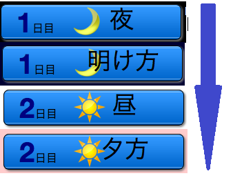

このゲームは 昼 夕方 夜 明け方の4つのフェーズで構成されていて、一定時間ごとにフェーズが切り替わることでゲームが進みます。
フェーズは 1日目 夜 から始まり、1日目 明け方→2日目 昼→2日目 夕方→2日目 夜→...と続きます。
フェーズ毎に各プレイヤーが可能な行動は異なります。

昼
プレイヤー同士で議論をて、誰が人狼陣営であるかを推理します。
昼の開始時に、前の日の夜〜明け方で人狼に殺害されたプレイヤーが判明します。
殺害されたプレイヤーはゲームから脱落し、決着がつくまで生存者と会話することはできません。
(死亡者同士で会話(霊話)することはできます)
夕方
多数決投票によって処刑するプレイヤーを決めます。
全生存者は、処刑したいプレイヤー1人に対して投票をします。
投票の結果、最も多くの得票を得たプレイヤーは処刑されて、死亡者となります。
最多得票のプレイヤーが2人以上いる場合、投票をやり直します(再投票)。
5回連続で再投票となった場合、引き分けとなります。(ゲーム終了)
時間内に投票を行わなかった生存者は、ペナルティとして突然死します。時間を見ていなくてうっかり、ということがないように注意してください。
処刑されたプレイヤーの役職は霊能者以外の生存者には公表されません。
夜
人狼は作戦会議を、村人はそれぞれ考えをまとめます。
自分の発言が、他の生存者には見えなくなります。ただし、
人狼と共有者は、それぞれ人狼同士、共有者同士で会話をすることができます。
人狼はこの時間に話し合って、誰を襲撃(殺害)するかを決めます。
(実際に襲撃するのは明け方です)
明け方
人狼を含む特殊能力を持った役職が、能力を実行します。
人狼同士・共有者同士であっても、自分の発言は他の生存者には見えません。
人狼は、生存者1人を襲撃します。襲撃の結果は、次の日の昼開始時に全プレイヤーへ公開されます。
人狼は、初日以外で時間内に襲撃を実行しなかった場合、ペナルティとして1人死亡します。発生しないように注意してください。
特殊能力を持った他の役職(占い師、狩人、少女、妖術師)も、能力を実行することができます(狩人、少女は2日目 明け方から能力を実行することができます)。